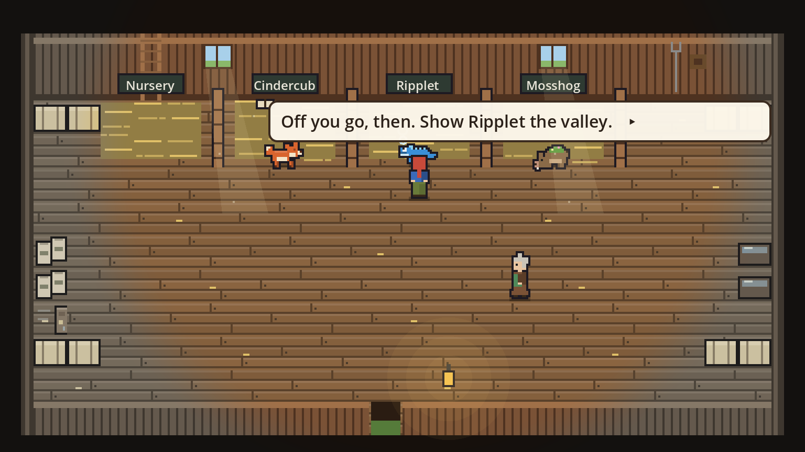
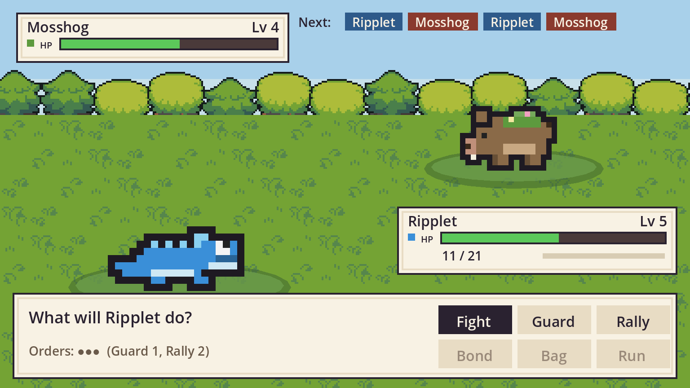
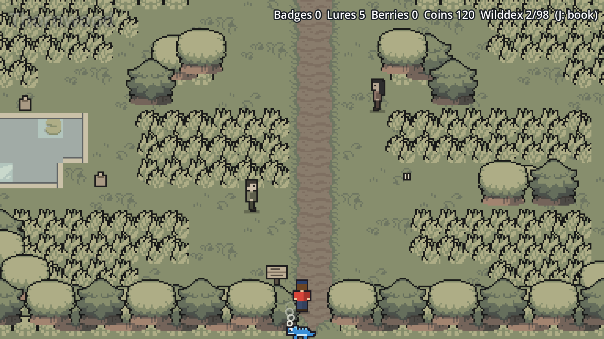
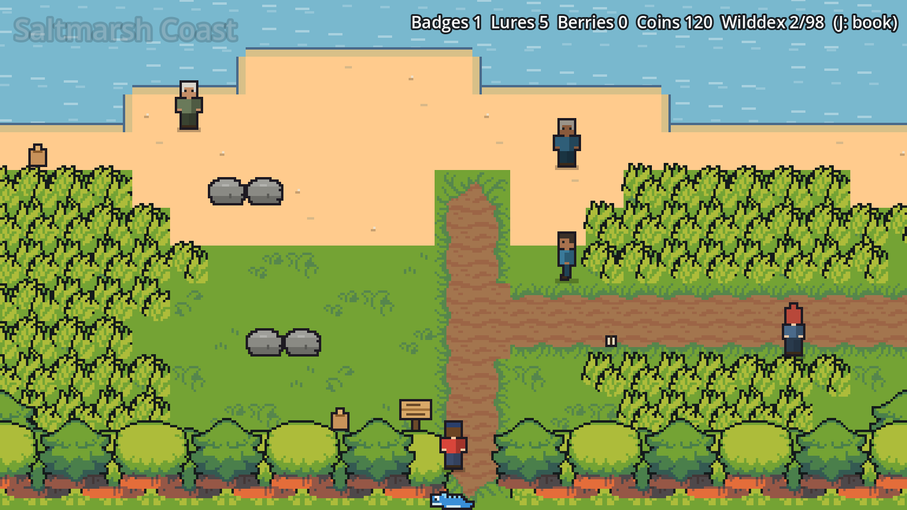
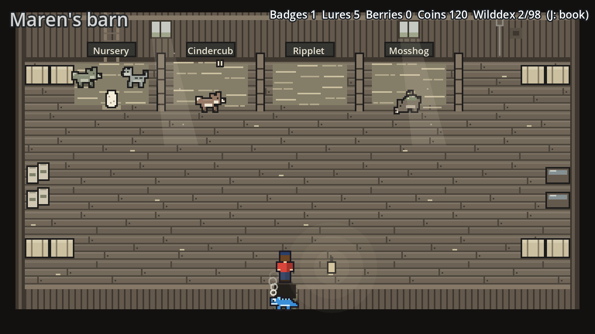
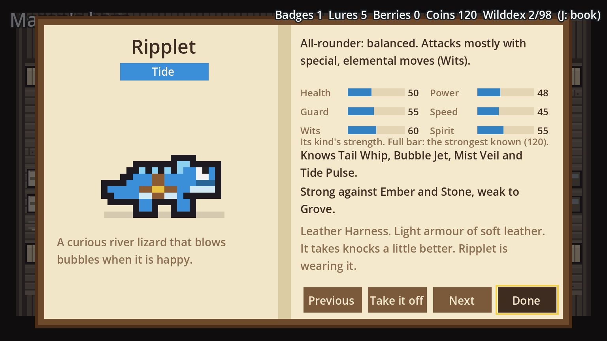
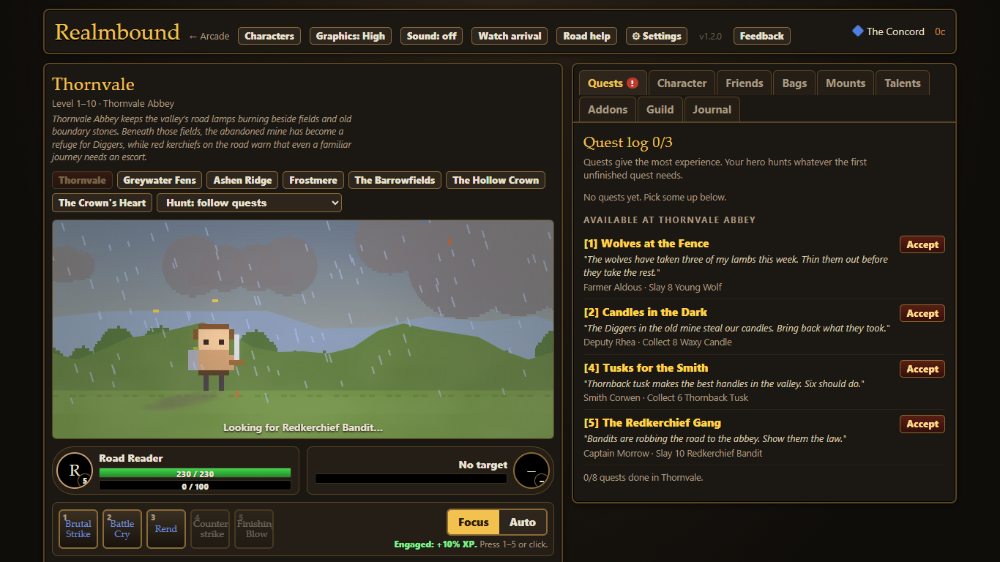
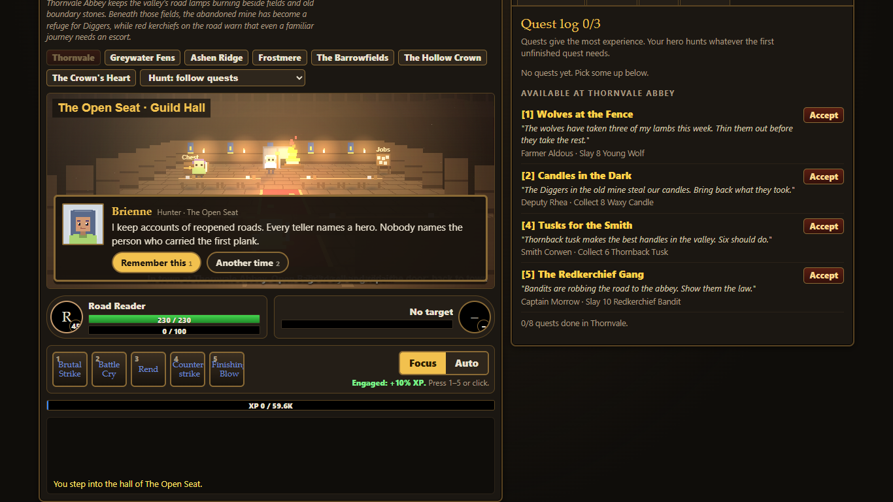
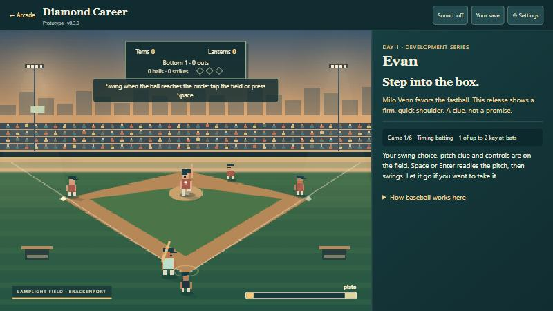
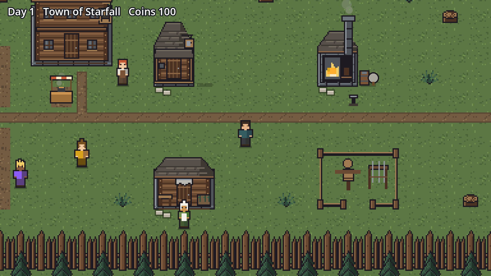

Wildbond
The valley of Larkhaven has lost its colour. Choose a young creature as your partner, and as trust grows between you, the world remembers its colours. Travel eight areas, earn eight badges, befriend creatures instead of capturing them, raise a team on Maren's ranch, and take on the league.






What you'll do
- Explore paths, tall grass and towns on foot.
- Battle tamers on the road and the Warden of each area.
- Befriend wild creatures with lures and patience.
- Raise, evolve and breed your team. Some creatures change in more than one way, depending on where and how you raise them.
Your first ten minutes
- Pick a partner in Maren's barn. Each has an element that beats another: see the chart below.
- Battle your rival Wren in town.
- Walk north into Thornwood. Step into tall grass to meet wild creatures.
- Heal with Maren in Larkhaven whenever your team is tired.
If you're lost
- The Journal says where to go next.
- Losing a lot? Go back to the grass near town and raise your team a few levels. Badges raise the level cap.
- Choose moves that hit hard against the foe's element, and Guard when a foe is "gathering power".
- To befriend a creature, weaken it first, then Bond.
Realmbound
A single-player world in the spirit of classic online RPGs. Create a hero, take quests, gear up and grow from level 1 to 60 across eight zones, each with its own light and weather. The world fills the screen, with your journal and satchel in hand. Then lead a guild of adventurers who work, rest and have their own stories, through dungeons (with harder Heroic versions) and a raid.


What you'll do
- Quest, fight with your class's abilities, loot and equip.
- Walk towns, visit the inn and the smithy, and walk the road to the Lantern Rest, an inn on the way to town.
- Recruit a guild, send them on jobs and hear their stories.
- Run dungeons (with Heroic versions) and a raid at 60.
Your first fifteen minutes
- Create a hero: faction, race, class, name and journey length.
- Follow the first quest; the Quests tab shows what's needed.
- Use your abilities yourself at first, then try Auto.
- Loot, compare gear in your bags, and turn the quest in.
If you're lost
- Quests tab first: it names the enemy or item and where.
- Hurt? Rest at the inn and repair your gear.
- Pick fights closer to your level.
- The field guide explains every system.
Diamond Career
Start as a young batter on a development club and try to earn your call-up. Bat by timing your swing or by reading the pitcher, sign contracts, get paid on the calendar, and spend your salary on things that last, like a better apartment or your first car. Your second month takes you on the road to three away parks.

How to hit
- Choose Contact or Power.
- Press Throw the pitch (or Space).
- Tap the field (or Space) as the ball reaches the glowing circle at the plate. Do nothing to let it go.
What you'll do
- Play the key at-bats of each game; the rest plays out around you.
- Choose between more money and more playing time.
- Grow your eye, contact and power.
Prefer to think?
Switch to Tactical in Settings: read the pitcher and choose, with no reflexes needed.
More in the works
Otherworld Prototype
Live one life in another world, with a gift that changes the choices you see. Three worlds so far: Asterhold, whose town changes with what you do; Hearthmere, a shuttered lakeside inn and a long winter; and the Ashen Throne. When a life ends, you keep a memory into the next.
Play Otherworld →Starfall Preview

Run a frontier guild town: post jobs on the board, serve stew at the counter, work the forge, and grow from a hamlet into a market town as your adventurers grow. Walk with the arrows, WASD or a click; Enter or E to use the board, the counter and the forge; M for music, N for sound effects. Play the new Starfall (preview) → An older version is here.
And later
A walk-in arcade where your characters meet, a shared catalogue of creatures across games, and more sports careers. Every game is playable on its own, in one light, shared universe.
Wildbond element chart
Read across from the attacking move's element. Strong means half again as much damage, and weak means about a third less. A creature also hits harder with moves of its own element.
Tell us what you think
One good moment and one rough edge is the most helpful thing you can send. Each game has a Feedback button in its top bar that fills in the version and where you are. Or just message Evan: a screenshot and a sentence is perfect.
Share feedback (GitHub account)Report a bugYour saves stay in your browser and are never sent anywhere. Each game has a "Your save" button to download a backup.